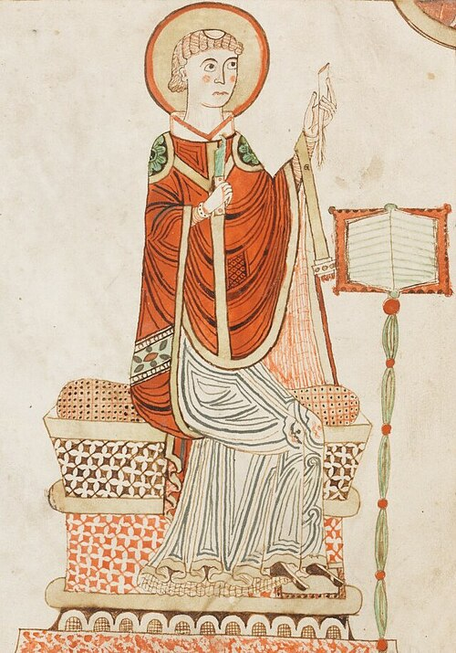

Bede's Plague
After four centuries, Roman rule ended in Britain in 410 AD. The army left Britain to DEFEND against the invasion of Rome by Visigoths. Unified administration in Roman Britain, road building, some urbanization and Christianity, the use of Latin, all gave way to decentralized, localized and less prosperous lives.Anglo-Saxon invasion ensued along with widespread return to paganism.
By the seventh century, with missionaries from Rome and Ireland, Christianity saw some resurgence.
In 686 Europe's first bubonic plague swept Ireland and England. it "ravaged the country far and near, and destroyed a great multitude of men,"[10] and that "scarcely any inhabitants [were] left in villages and places which had been thickly populated, and some towns were wholly deserted."
Bede: 673-735

Bede's "The Life of Ceolfrith", written in about 710, records that
only two surviving monks were capable of singing the full offices; one
was Ceolfrith and the other a young boy, who according to the
anonymous writer had been taught by Ceolfrith. The two managed to do
the entire service of the liturgy until others could be trained. The
young boy was almost certainly Bede, who would have been about 14. w
Two lone survivors